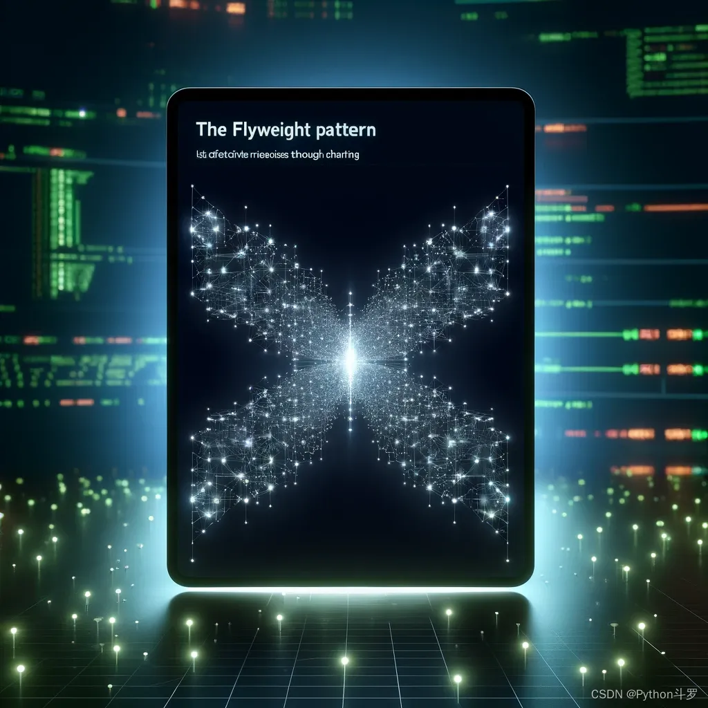

享元模式：优化资源利用的高效策略
在面向对象的软件开发中，享元模式是一种结构型设计模式，旨在减少内存使用，通过共享尽可能多的相似对象来提高应用程序的效率。本文将详细介绍享元模式的定义、实现、应用场景以及优缺点。

1. 享元模式的定义
享元模式（Flyweight Pattern）通过共享技术实现相似对象的重用，这种模式通常用于处理大量对象时的性能优化。它主要分为两部分：享元对象（flyweight）和享元工厂（factory）。享元对象中存储了可以共享的状态，称为内在状态，而每个对象特有的状态称为外在状态，由客户端保存。
2. 实现享元模式
在Python中，实现享元模式涉及创建一个享元工厂以及定义享元对象。以下是享元模式的简单实现示例：
class Flyweight:
"""享元类包含一个部分共享的状态（内在状态）。"""
def __init__(self, shared_state):
self._shared_state = shared_state
def operation(self, unique_state):
s = self._shared_state
u = unique_state
print(f"Flyweight: Displaying shared ({s}) and unique ({u}) state.")
class FlyweightFactory:
"""享元工厂管理享元对象池并确保合理地共享享元。"""
_flyweights = {}
def __init__(self, initial_flyweights):
for state in initial_flyweights:
self._flyweights[self.get_key(state)] = Flyweight(state)
def get_key(self, state):
"""根据享元的状态返回一个键。"""
return "_".join(sorted(state))
def get_flyweight(self, shared_state):
key = self.get_key(shared_state)
if not self._flyweights.get(key):
print("FlyweightFactory: Can't find a flyweight, creating new one.")
self._flyweights[key] = Flyweight(shared_state)
else:
print("FlyweightFactory: Reusing existing flyweight.")
return self._flyweights[key]
def list_flyweights(self):
count = len(self._flyweights)
print(f"FlyweightFactory: I have {count} flyweights:")
print("\n".join(map(str, self._flyweights.keys())))
# 客户端代码
factory = FlyweightFactory([("Cheese", "Tomato"), ("Dough", "Cheese")])
factory.list_flyweights()
# 添加一个新享元
flyweight = factory.get_flyweight(["Cheese", "Tomato"])
flyweight.operation(["Extra tomato"])
# 重用现有享元
flyweight = factory.get_flyweight(["Dough", "Cheese"])
flyweight.operation(["Garlic"])
3. 享元模式的应用实例
享元模式在需要处理大量对象时非常有用，如：
- 图形编辑器：管理成千上万的细粒度对象，如字符或行。
- 网络游戏：大量的玩家对象可以共享部分状态，如纹理、模型。
- 数据库连接池：共享和重用连接对象，而不是为每次查询创建新连接。
4. 优点和缺点
优点：
- 大幅减少内存使用。
- 可以减少系统中对象的数量，提高性能。
缺点：
- 增加系统复杂性，需要区分内外部状态。
- 需要妥善处理线程安全问题，特别是在多线程环境中。
5. 总结
享元模式是一种有效的优化策略，适用于系统中存在大量相似对象的场景。正确的使用享元模式可以显著降低程序的内存占用和提高效率。然而，这也需要仔细设计系统的存储结构和状态管理。